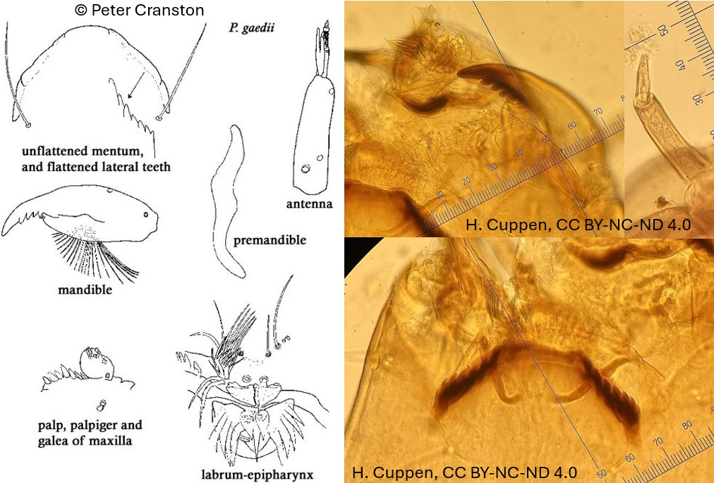

Potthastia groupe gaedii (Kieffer, 1906)

Mentum
Dent médiane, très large, en forme de dôme. 8 paires de dents latérales foncées mais peu visibles (peuvent être lissées et le mentum peut apparaitre comme un grand dôme cranté latéralement)
Mandibules
Dent apicale plus courte que la largeur combinée des 4 dents internes.
Labre
SI lamelliforme et SII simple. Peigne de l’épipharynx composé de 3 écailles longues et pointues. Prémandibules étroites et simples
Ecologie
Deux espèces (P. gaedii et P. montium) sont inféodées aux eaux vives alors que l’espèce P. Longimanus est rencontrée dans les lacs. Au moins 5 espèces sont présentes, toutes dans l'Holarctique.
Espèces recensées en France
4 :P. gaedii, P. longimanus, P. montium, P. pastoris.